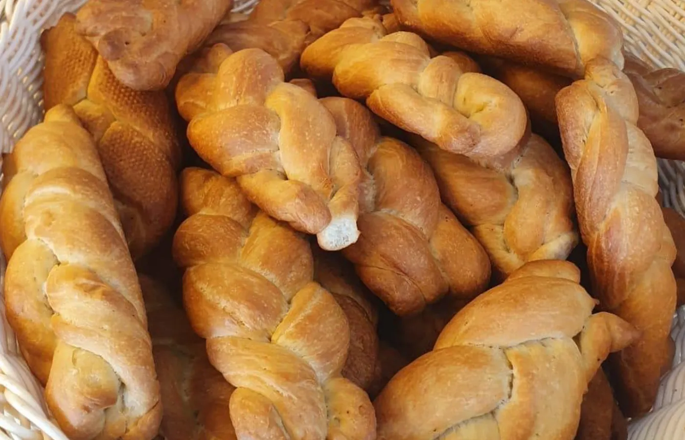
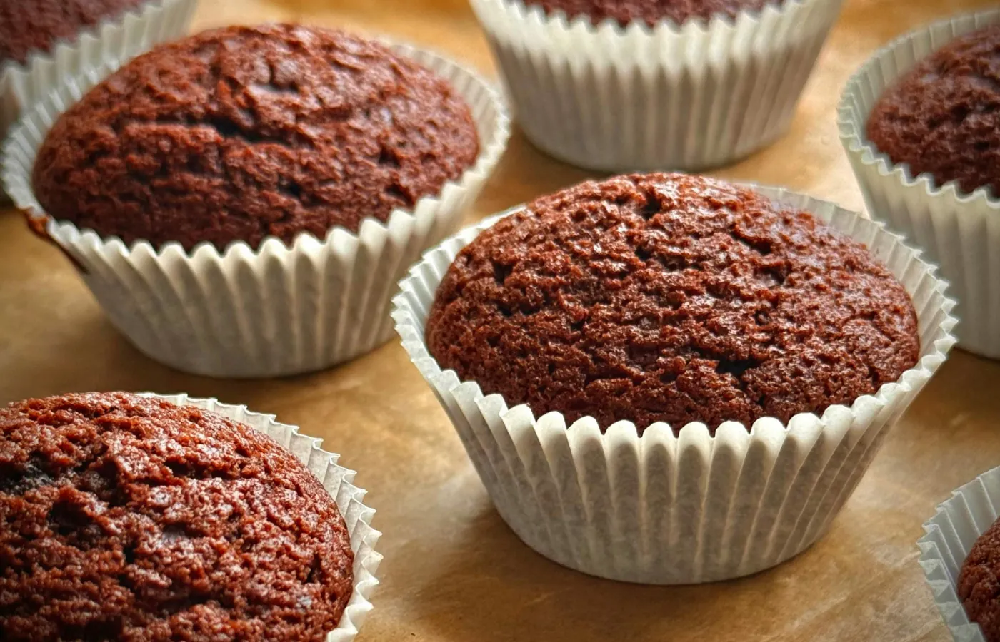
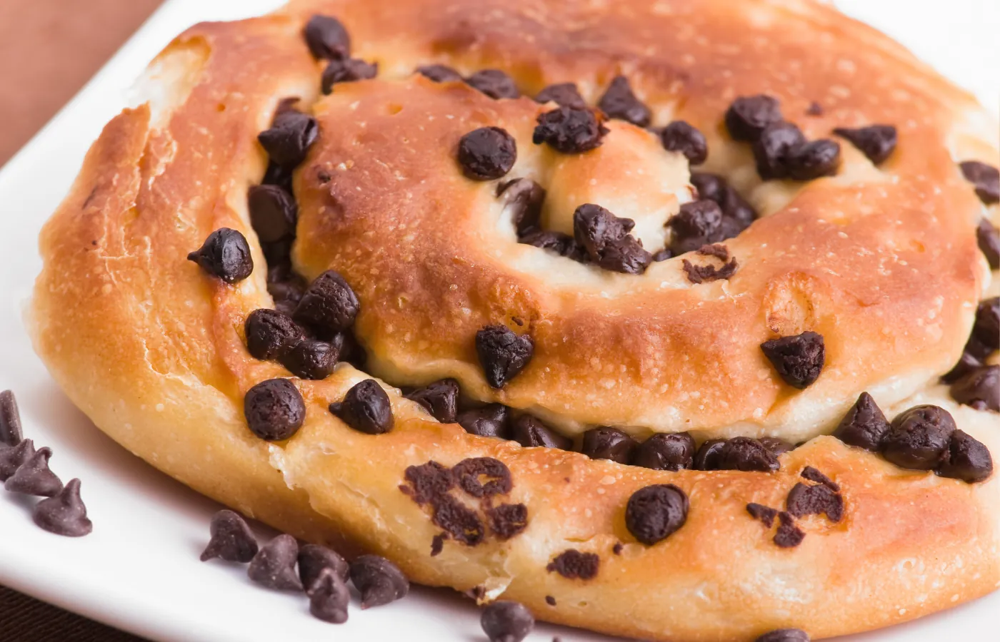
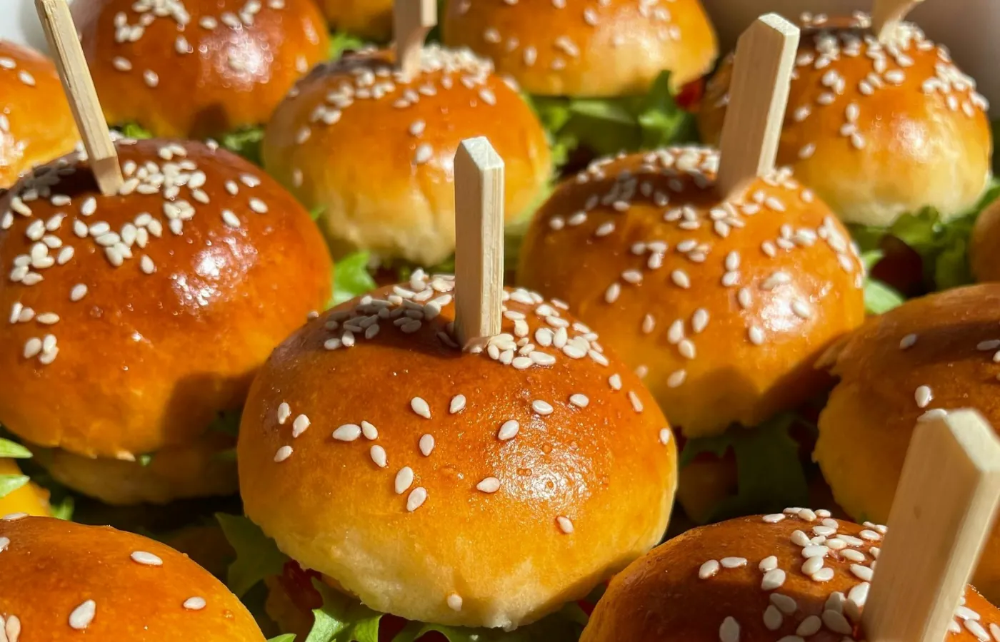

Le meilleur de la tradition boulangère française et des saveurs antillaises.

Notre pain natté est la fierté de la boulangerie. Tressé à la main chaque matin et doré à la perfection, il incarne le savoir-faire transmis de génération en génération dans la famille Nicolhas.
Un pain généreux, à la mie moelleuse et à la croûte croustillante, parfait pour accompagner tous les repas de la journée.

Moelleux, parfumé et généreux, notre pudding antillais est préparé selon la recette familiale de Dominique. Un dessert incontournable de la pâtisserie créole, à savourer à toute heure.
Il fait partie des douceurs les plus demandées de la boutique, appréciée aussi bien des habitués que des visiteurs de passage à Sainte-Anne.

Le pomkanel est une viennoiserie antillaise, moelleuse et légèrement briochée, vendue nature ou aux pépites de chocolat. Très populaire en Guadeloupe, elle se consomme au petit-déjeuner ou au goûter.

Le pain burger maison de la boulangerie Nicolhas a fait forte impression lors du concours du meilleur burger de Guadeloupe. Aujourd'hui, il est livré dans de nombreux hôtels de l'île, un vrai symbole du savoir-faire de la maison.
Et plein d'autres produits classiques de la gastronomie française et antillaise à découvrir chaque jour en boutique : sandwichs, salades, entremets, tartes, quiches, viennoiseries, baguettes...
Pour vos commandes traiteur ou toute question sur nos produits, contactez-nous directement.
Nous contacter